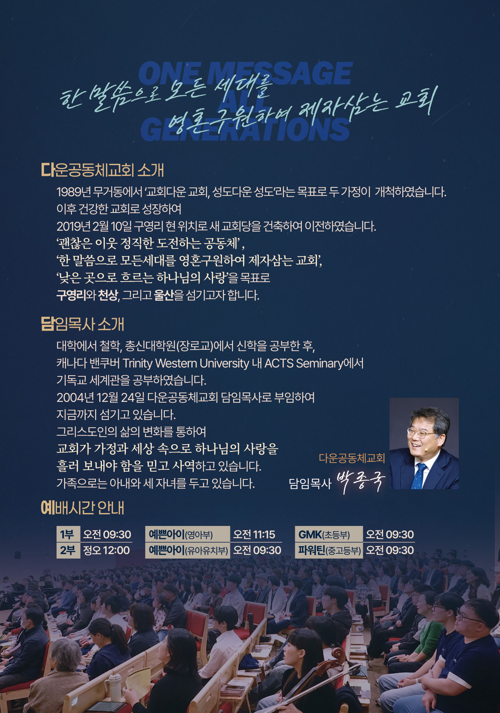
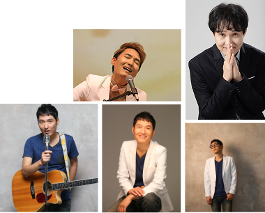

추수감사절 간증집회
VIP 초대장
감사의 계절,
은혜의 이야기가 있는 자리에
소중한 당신을 초대합니다.


강사 소개
추수감사절 간증집회를 섬겨주실 강사를 소개합니다.
나들 | 박영열 목사
(엔터교회 담임)
90년대 중반, 앨범 ‘좋아좋아’로 인기몰이를 했던 듀오 그룹 ‘일기예보’에서 ‘나들’이란 예명으로 활동했던 가수입니다.
강변가요제 동상에, 공전의 히트 송 ‘인형의 꿈’, ‘그대만 있다면’, ‘니가 좋아’뿐만 아니라 그가 작곡한 수많은 복음송과 찬양, 그리고 살아있는 간증 집회에 VIP와 여러분을 기쁨으로 초대합니다.
